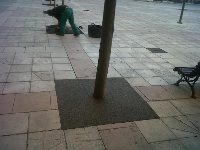
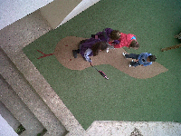
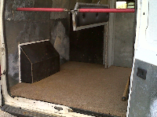

Enresinados
Conglomerar para diferentes usos
Técnica de fijación de áridos, caucho, etc para evitar que se muevan, desgranen, etc o para darle una finalidad, como pueden ser suelos infantiles de seguridad, suelos de seguridad para transporta animal y muy utilizado en ornametación de jardines de áridos y fijación de gravas en alcorques
|

Alcorques y JardinesEnresinadosTecnica muy utilizada para fijar áridos, creándose una superficie drenante, tanto para diseños de jardín, como sobre todo se utiliza en alcorques de calles, donde el espacio que d leer más |

Suelos de SeguridadParques infantilesLos realizamos con baldosas prefabricadas o realizado en el sitio con diseños exclusivos, con formas y formaciones temáticas, haciendo expecial cada proyecto. leer más |

Superficies AnimalesSuelos de seguridad en transporteMuy importante para el bienestar de los animales y la seguridad de la conducción, se basa en que los animales en su transporte no se desplacen. Para ellos aplicamos la misma técnica que en leer más |